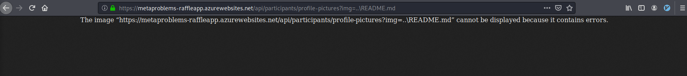
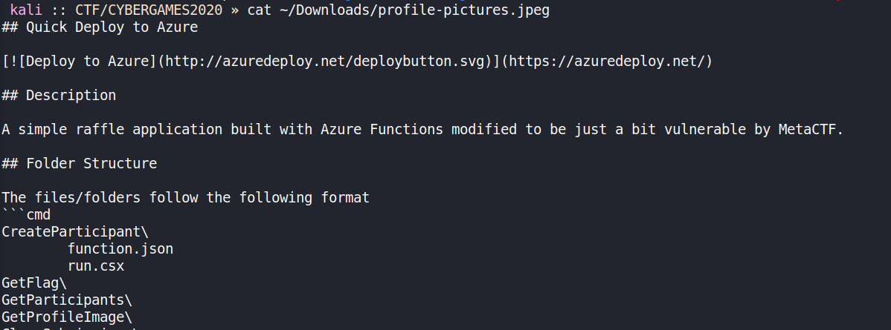
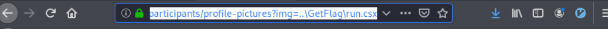
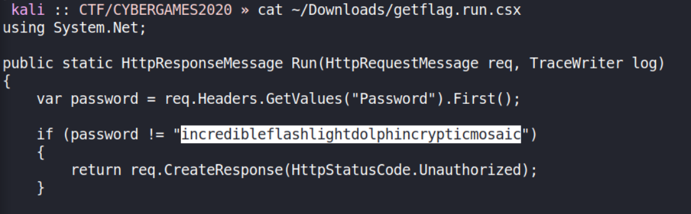
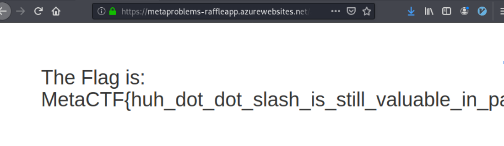

I do it IN THE CLOUD
Category: webOkay, okay, maybe coding in the cloud isn’t that much fun. But what about hacking in the cloud? How about when instead of a straightforward Windows/Linux box, you’re targeting a Platform-as-a-Service (PaaS) application running on Azure Functions? Fortunately (unfortunately?) for you, developers don’t magically write secure code in the cloud. With that in mind, see if you can find and exploit a fairly common web vulnerability in this app. Once you do, you can prove your level of access by finding the hardcoded admin password in the API code and use it to login and get the flag :)
So this one was the least-solved web challenge for this competition, which really surprised me, since it seemed fairly straight forward. Reading the description, fairly common web vulnerability + reading harcoded admin password smells like LFI to me.
Taking a look at the app, we see something that looks like LFI:
/api/participants/profile-pictures?img=person-cyan.pngIs the img parameter vulnerable? Probably. Trying to navigate to ../../../../../../etc/passwd or /etc/passwd fails (returns 500 error), but re-reading the description, we see it’s running on Azure Functions… So it’s Windows and everything sucks. The hint says “all good projects have a README”, though, so that’s a good file to try including.

Hey there we go! Downloading that file we see they lay out the file structure for us.

GetFlag looks like something I’d be interested in. I tried getting admin.html to see the hardcoded password before I realized that makes no sense (since it’d be client side anyway). So a few guesses and searches later, we grab run.csx (which was storing environmental/secret variables or something) for the GetFlag folder:

Finding the hardcoded password:

And grabbing the flag :)
